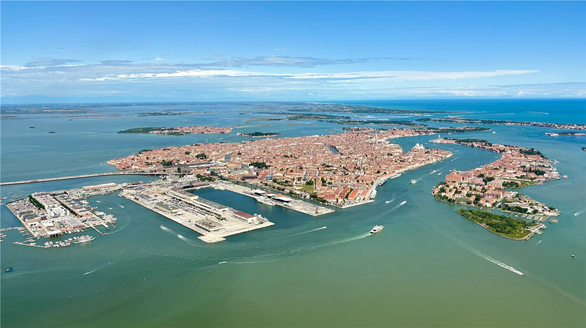

이창동 '가능한 사랑' 베니스 심사위원대상… 한국 영화 처음
이창동 감독의 신작 '가능한 사랑'이 제83회 베니스국제영화제에서 심사위원대상을 받았다. 한국 영화가 이 부문을 수상한 것은 처음이다.
주유민 기자 · 2026.09.13
橋경제·문화·스포츠

이창동 감독의 신작 '가능한 사랑'이 제83회 베니스국제영화제에서 심사위원대상을 수상했다고 경향신문과 조선일보 등이 13일 전했다. 시상식은 현지시간 12일 저녁 이탈리아 베네치아 리도섬에서 열렸다.
광고 문의 · 300×250심사위원대상은 최고상인 황금사자상 다음 순위의 상으로 은사자상으로도 불린다. 한국 영화가 이 부문을 받은 것은 이번이 처음이다.
이 감독 개인으로는 2002년 '오아시스'로 감독상을 받은 이후 24년 만의 베니스 수상이다. 그동안 그의 작품은 주요 국제영화제 경쟁 부문에 꾸준히 초청돼 왔다.
이 감독은 수상 소감에서 이 상이 함께 작업한 이들의 것이라는 취지로 말했다. 제작진과 배우들에 대한 언급이 이어졌다.
한국 영화는 최근 몇 년 사이 국제영화제 초청과 수상이 이어지면서 배급 경로도 넓어졌다. 다만 국내 극장 관객 수 회복은 더딘 편이다.
이번 수상으로 '가능한 사랑'의 해외 배급 협상에도 탄력이 붙을 것으로 보인다. 영화제 수상 이력은 배급사 선택과 개봉 규모에 직접적인 영향을 준다.
국내 개봉 일정은 아직 확정되지 않았다. 배급사는 영화제 일정과 해외 개봉 시점을 고려해 결정할 것으로 알려졌다.